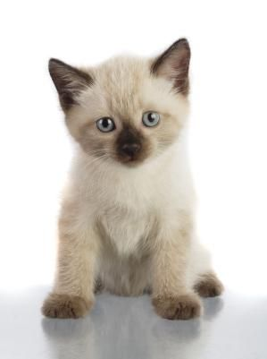
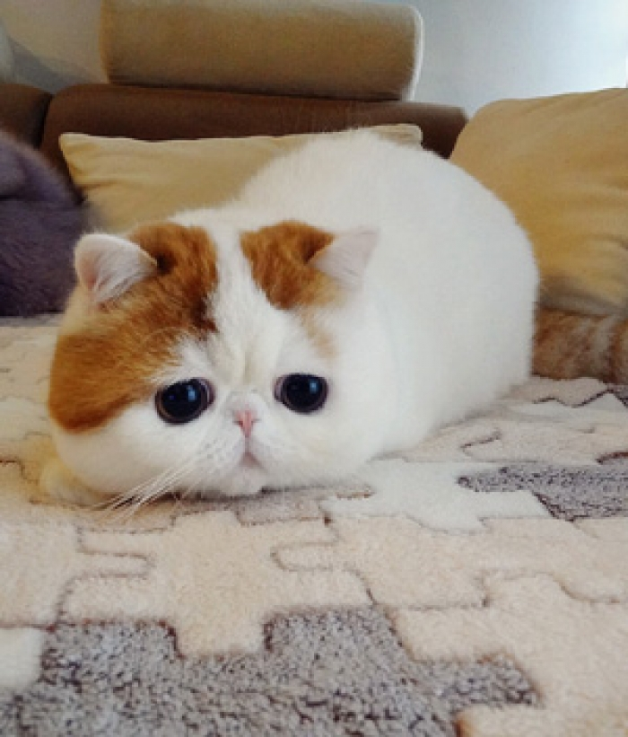
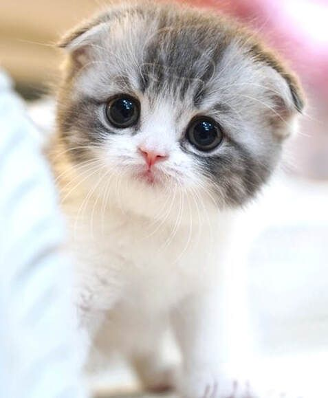

Siamese cat
ABOUT
The Siamese cat is one of the first distinctly recognized breeds of Asian cat. Derived from the Wichianmat landrace, one of several varieties of cat native to Thailand, the original Siamese became one of the most popular breeds in Europe and North America in the 19th century. Wikipedia Origin: Thailand Common nicknames: Meezer, Mese
British Shorthair

ABOUT
The British Shorthair is the pedigreed version of the traditional British domestic cat, with a distinctively stocky body, dense coat, and broad face. The most familiar colour variant is the "British Blue", with a solid grey-blue coat, orange eyes, and a medium-sized tail. Wikipedia Origin: United Kingdom Other names: British Blue (legacy) TICA: standard
Maine Coon

ABOUT
The Maine Coon is a large domesticated cat breed. It is one of the oldest natural breeds in North America. The breed originated in the U.S. state of Maine, where it is the official state cat. Wikipedia Mass: 5.9 – 8.2 kg (Male, Adult), 3.6 – 5.4 kg (Female, Adult) Origin: Maine, United States Length: 48 – 100 cm (Adult, Nose to tail) Rank: Animal breed Common nicknames: Gentle giants Other names: Coon Cat; Maine Cat; Maine Shag; American Longhair; American Coon Cat; American Forest Cat
Persian cat

ABOUT
The Persian cat, also known as the Persian longhair, is a long-haired breed of cat characterized by a round face and short muzzle. The first documented ancestors of Persian cats were imported into Italy from Persia around 1620. Wikipedia Lifespan: 12 – 17 years (In captivity) Origin: Iran CFA: standard Other names: Persian longhair, Shirazi
Ragdoll

ABOUT
The Ragdoll is a breed of cat with a distinct colorpoint coat and blue eyes. Its morphology is large and weighty, and it has a semi-long and silky soft coat. American breeder Ann Baker developed Ragdolls in the 1960s. They are best known for their docile, placid temperament and affectionate nature. Wikipedia Origin: Riverside Breed of: Cat Rank: Breed
Sphynx cat

ABOUT
The Sphynx cat also known as the Canadian Sphynx, is a breed of cat known for its lack of fur. Hairlessness in cats is a naturally occurring genetic mutation, and the Sphynx was developed through selective breeding of these animals, starting in the 1960s. Wikipedia Origin: Toronto TICA: standard
American Shorthair

ABOUT
The American Shorthair is a breed of domestic cat believed to be descended from European cats brought to North America by early settlers to protect valuable cargo from mice and rats. According to the Cat Fanciers' Association, in 2020, it was the eighth most popular pedigreed cat in the world. Wikipedia Origin: Europe, North America CFA: standard
Abyssinian

ABOUT
The Abyssinian is a breed of domestic short-haired cat with a distinctive "ticked" tabby coat, in which individual hairs are banded with different colors. They are also known simply as Abys. Wikipedia Origin: Ethiopia, South East Asia Scientific name: Felis catus Rank: Animal breed Higher classification: Cat TICA: standard
Exotic Shorthair
ABOUT
The Exotic Shorthair is a breed of cat developed as a short-haired version of the Persian. The Exotic is similar to the Persian in many ways, including temperament and conformation, a flat nose and face with the exceptions of the short dense coat. Wikipedia Origin: United States CFA: standard Foundation bloodstock: American Shorthair; Persian Cat; Burmese (occasionally); Russian Blue (occasionally)
Scottish Fold
ABOUT
The Scottish Fold is a breed of domestic cat with a natural dominant gene mutation that affects cartilage throughout the body, causing the ears to "fold", bending forward and down towards the front of the head, which gives the cat what is often described as an "owl-like" appearance. Wikipedia Origin: Scotland Rank: Animal breed Higher classification: Cat CFA: standard Other names: Scot Fold
Burmese cat

ABOUT
The Burmese cat is a breed of domestic cat, originating in Burma, believed to have its roots near the Thai-Burma border and developed in the United States and Britain. Most modern Burmese are descendants of one female cat called Wong Mau, which was brought from Burma to America in 1930 and bred with American Siamese. Wikipedia Origin: Myanmar (Burma), Thailand Scientific name: Felis catus Higher classification: Cat TICA: standard
Siberian cat

ABOUT
The Siberian is a centuries-old landrace of domestic cat in Russia and recently developed as a formal breed with standards promulgated the world over since the late 1980s. Siberians vary from medium to medium-large in size. Wikipedia Origin: Russia Other names: Siberian Forest Cat; Moscow Semi-longhair Neva Masquerade (colourpoint variant) TICA: standard
Norwegian Forest cat

ABOUT
The Norwegian Forest cat is a breed of domestic cat originating in Northern Europe. This natural breed is adapted to a very cold climate, with a top coat of long, glossy, water-shedding hair and a woolly undercoat for insulation. Wikipedia Scientific name: Felis catus Origin: Norway Common nicknames: skogkatt FIFe: standard
Lykoi

ABOUT
he Lykoi is a natural mutation from a domestic shorthaired cat. The mutation has occurred in domestic cats over the last 20 years. DNA testing has been done by UC Davis to confirm that the cats do not carry the Sphynx/Devon Rex gene. The breed was developed by Patti Thomas in Vonore, Tennessee. Wikipedia Origin: Vonore Scientific name: Felis catus Rank: Animal breed Common nicknames: Werewolf cat, wolf cat TICA: standard
Chausie

ABOUT
The Chausie is a domestic breed of cat that was developed by breeding a few individuals from the non-domestic species jungle cat to a far greater number of domestic cats. The Chausie was first recognized as a domestic breed by The International Cat Association in 1995. Wikipedia Origin: Egypt Rank: Animal breed Breed of: Cat
ONLINE_SHOPPING
1.PETS
2.PLANTS
3.PETS-ACCESSORIES
4.PLANTS-ACCESSORIES
5.PETS-SPA & PETS-CARE
6.PLANTS-CARE
7.ADD-YOUR PRODUCTS
COSTOMER POLICIES
CONTACT US
TERMS OF USE
TRACK ORDERS
SHIPPING
RETURNS
PRIVACY POLICY